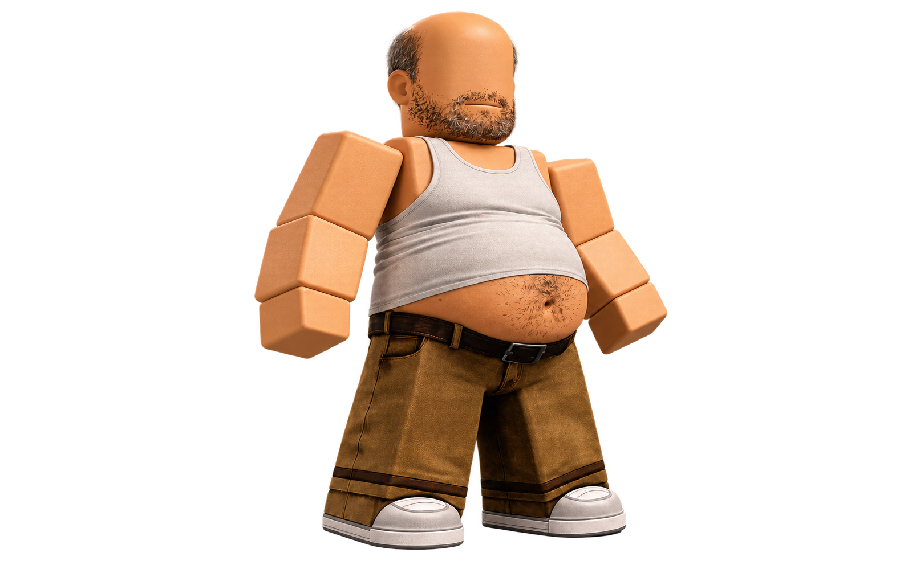
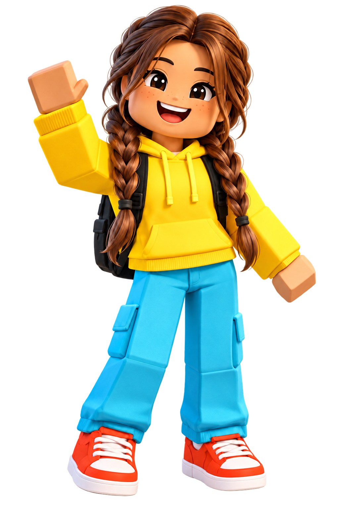

van de 12- tot en met 16-jarige scholieren gamede in 2023 bijna iedere dag.
NJi, bijgewerkt mei 2026 ↗Je kind speelt online. Maar wie speelt er met je kind?
Veel ouders weten niet precies wat hun kind online doet. Op platforms als Roblox kunnen kinderen mensen tegenkomen met een nepprofiel of verkeerde bedoelingen. Hier lees je wat je kunt doen om je kind veiliger online te laten gamen.


Even wat cijfers
Hoeveel kinderen gamen eigenlijk?
per dag besteden kinderen van 7 tot 12 volgens hun ouders gemiddeld aan gamen.
NJi, schatting over 2019–2025 ↗scholieren van 12 tot en met 16 jaar voldeden in 2023 aan de gebruikte criteria voor problematisch gamen. Dat is ongeveer 2,2%, oftewel 1 op de 45.
Met cijfers weet je nog niet hoe het bij jouw kind gaat. Kijk af en toe mee en vraag wat je kind online meemaakt.
Online spelen is ook online afspreken.
In een online game speelt je kind vaak met anderen. Sommige spelers gebruiken een nepprofiel of hebben verkeerde bedoelingen. Soms probeert iemand het gesprek naar een privé-app te verplaatsen. Vraag daarom af en toe met wie je kind speelt en wat ze samen doen.
Bron: Netwerk Mediawijsheid over veilig gamen ↗
Check je kennis ↓Hoe goed ken jij de online wereld van je kind?
Vink aan wat je thuis herkent. Daarna krijg je een paar vragen waarmee je makkelijk het gesprek kunt beginnen.
Een vraag voor vandaag
“Laat eens zien wat je zo leuk vindt aan dit spel”
Hoe begin je erover?
Je hoeft er geen zwaar gesprek van te maken. Ga er even bij zitten en laat je kind vertellen.
- 1Kies een rustig moment
Wacht tot de ronde voorbij is. - 2Laat je kind het voordoen
Vraag wie er meespelen en hoe ze elkaar kennen. - 3Maak samen afspraken
Bijvoorbeeld over chatten, aankopen en wat privé blijft.
Doet je kind ineens anders?
Zo’n verandering kan allerlei oorzaken hebben. Zie je meerdere dingen terug? Vraag dan rustig hoe het gaat.
Bron: signalenlijst van Offlimits ↗01Je kind draait het scherm snel weg+
Wat je kunt doen: begin niet met controleren. Vraag rustig: “Ik merk dat je je scherm wegdraait. Is er iets waar je mee zit?”
02Berichten maken je kind boos of verdrietig+
Wat je kunt doen: benoem alleen wat je ziet. Zeg bijvoorbeeld: “Je lijkt gespannen na dat bericht. Wil je vertellen wat er gebeurde?”
03Er is ineens een nieuwe online vriend+
Wat je kunt doen: vraag hoe ze elkaar hebben leren kennen, wat ze samen doen en wat die ander al over je kind weet.
04Je kind slaapt slechter of school gaat minder+
Wat je kunt doen: kijk samen wanneer het veranderde. Maak ruimte om te vertellen en zoek hulp als je kind daar behoefte aan heeft.
Loop Roblox samen even na.
De menu’s veranderen nog weleens. Gebruik daarom de officiële ouderhandleiding voor de precieze stappen.
- 1Chat en content
Kies welke content past en wie mag chatten.
- 2Connecties en privéservers
Bekijk wie je kind kan toevoegen en uitnodigen.
- 3Uitgaven en speeltijd
Stel maandlimieten, meldingen en schermtijd in.
ROfficiële Roblox-handleidingParent & Caregiver Guide
Open de gids ↗Waar kun je terecht?
Dit zijn de belangrijkste landelijke organisaties voor opvoedtips, informatie en hulp als er online iets is gebeurd.
Nederland
Nederlands JeugdinstituutVoor gewone vragen over mediaopvoeding, schermtijd en afspraken thuis.Bekijk de informatie ↗
Netwerk MediawijsheidVoor uitleg over gamen, privacy, nepaccounts en veilig mediagebruik.Lees verder ↗
OfflimitsAls je kind online iets naars of grensoverschrijdends heeft meegemaakt. Gratis en anoniem advies.Vraag om hulp ↗
De KindertelefoonAls je kind zelf anoniem met iemand wil praten over wat er online of thuis speelt.Voor kinderen van 8–18 jaar ↗
Veiliginternetten.nlVoor praktische hulp bij accounts, wachtwoorden, phishing, privacy en apparaten.Bekijk de stappenplannen ↗
Centrum Seksueel GeweldVoor professionele hulp na een ongewenste seksuele ervaring, online of offline.Bekijk de hulpopties ↗
Vlaanderen en Brussel
Veilig OnlineVoor ouders die meer willen weten over mediaopvoeding. Een initiatief van Gezinsbond en Child Focus.Bekijk het aanbod ↗
MediawijsVoor betrouwbare uitleg en materialen over de digitale wereld van kinderen en jongeren.Lees verder ↗
Child FocusBij online seksuele uitbuiting, ongewenste beelden of een vermist kind.Neem contact op ↗
AwelAls je kind zelf anoniem wil bellen of chatten over iets waar het mee zit.Voor kinderen en jongeren ↗
1712Voor vragen over geweld, misbruik en kindermishandeling. Ook ouders kunnen er terecht.Bel of chat met 1712 ↗
BetternetVoor Belgische informatie en materialen over veilig internetten en mediawijsheid.Bekijk het overzicht ↗
Lubach over Roblox.
In deze aflevering zie je hoe commerciële prikkels en contact met onbekenden op Roblox samenkomen. Handig om eerst zelf te kijken of om samen met een ouder kind te bespreken.